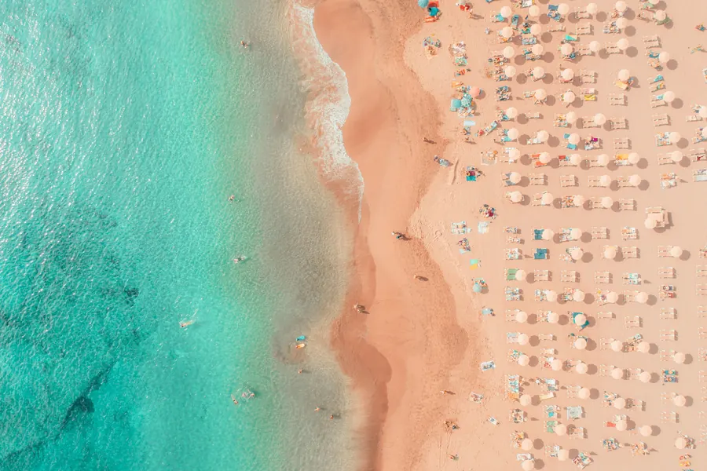

The Dominican Republic is one of the Caribbean's most popular destinations, and its climate is straightforward — tropical and warm year-round with two meaningful seasons. The difference between traveling in January and traveling in September is not about temperature (both are warm). It is about rainfall, hurricane risk, resort pricing, and what you are actually there to do.
This guide breaks down every month, the regional differences that most planning guides overlook, and what changes if you are visiting Punta Cana versus Puerto Plata versus Samaná.
Quick Answer
December through March is the best time for most visitors — dry, sunny, with the most reliable beach conditions and the calmest seas. The tradeoff is peak pricing and demand. November can offer shoulder-season value: quieter, meaningfully cheaper, and improving weather as hurricane activity generally declines toward the official November 30 season end. August through October carries the highest hurricane risk and should be approached carefully with appropriate travel insurance.

The Dominican Republic's Two Seasons
Dry Season: December through April
This is the DR's main tourist season for a reason. The northeast trade winds bring dry, settled weather to most of the country — particularly the southeast coast where Punta Cana and Bávaro are located. Rainfall across the Punta Cana area averages notably low from January through March. Sea temperatures are warm and comfortable for swimming, trade winds keep afternoons pleasant, and both water clarity and beach conditions are at their best.
December is excellent weather-wise but the final two weeks carry the highest prices of the year due to Christmas and New Year's demand. By contrast, January and February are peak weather with moderate peak pricing. March through early April sees spring break pressure — expect higher resort rates and busy beaches. By late April, conditions are still generally dry but prices moderate as demand eases.
Wet Season and Hurricane Season: May through November
May is a transition month — drier than the summer but noticeably wetter than April. Many years, May is a reasonable shoulder window: prices drop, resorts are quieter, and weather holds reasonably well. June through November is the Atlantic hurricane season (June 1 – November 30, per NOAA), with peak activity statistically concentrated around September 10.
The wet season does not mean constant rain. The pattern on the southeast coast (Punta Cana) is typically morning sunshine and afternoon or evening showers, particularly June through September. That said, the increased atmospheric moisture and storm track risk are genuine considerations. August through October is when most travelers without a specific budget or timing reason should pause before booking.
Hurricane season runs June 1 through November 30. The Dominican Republic has experienced significant storm impacts historically. Any trip between August and October should include comprehensive travel insurance with trip cancellation and interruption coverage. Source: NOAA National Hurricane Center — Tropical Cyclone Climatology.
Month-by-Month Breakdown
| Month | Conditions (Punta Cana) | Crowds | Hurricane Risk | Best For |
|---|---|---|---|---|
| January | ☀ Dry, sunny, comfortably warm | High | Outside official Atlantic season | Beach vacations, families, couples |
| February | ☀ Dry, sunny, comfortably warm | High | Outside official Atlantic season | Whale watching (Samaná), best weather |
| March | ☀ Dry, warming; pleasantly warm | Very High | Outside official Atlantic season | Spring break, beach, whale watching early |
| April | ⛅ Mostly dry, some showers; warm | Moderate | Minimal | Post–spring break value window |
| May | ⛅ Transition, more rain; hot and humid | Low | Low | Budget travel, shoulder season |
| June | 🌧 Wet season, hot and humid | Low | Moderate | Budget travel — travel insurance essential |
| July | 🌧 Hot and humid, frequent afternoon showers | Low–Moderate | Moderate | Budget only — travel insurance essential |
| August | ⚡ Hot, rainy, elevated storm risk | Low | High | Not recommended without travel insurance |
| September | ⚡ Storm peak risk; highest-risk month | Very Low | Highest | Avoid or only with full trip coverage |
| October | 🌧 Wet, hurricane season still active | Low | Moderate–High | Budget only — travel insurance essential |
| November | ⛅ Improving conditions, transition to dry season | Moderate | Low — season officially ends Nov 30 | Shoulder value, good weather late month |
| December | ☀ Dry season, comfortably warm | Very High | Very Low | Christmas/New Year, festive atmosphere |
Conditions column describes qualitative seasonal weather patterns for the Punta Cana area. No specific temperature dataset or measurement type is cited. Actual temperatures and conditions vary by year and location. The north coast (Puerto Plata, Cabarete) experiences different patterns — see the regional section below.
Best Time by Travel Priority
Not every traveler has the same priorities. The table below maps common travel goals to the most suitable months.
| Travel Priority | Best Months | Main Advantage | Main Tradeoff |
|---|---|---|---|
| Beach vacation | January – March | Dry weather, calm seas, clear water | Peak resort prices, busy beaches |
| Family trip | January – March, late November | Dry conditions, settled weather for kids | Jan–Mar: peak pricing; Nov: some rain risk |
| Lower crowds | May, November | Quieter resorts, better service ratios | May: wet season begins; Nov: storm tail risk |
| Budget travel | May, June, November | Potentially lower accommodation prices than peak holiday periods; compare actual quotes for your dates | Rain, humidity, hurricane risk (Jun–Oct) |
| Whale watching in Samaná | January – March (peak: February) | Humpback migration in Samaná Bay | Peak season pricing; advance booking needed |
| Shoulder value + good weather | November (mid–late) | Quieter, lower rates, improving weather | Atlantic season technically active until Nov 30 |
| Lower historical tropical-cyclone exposure | December – May | Outside the Atlantic hurricane season window (June 1 – Nov 30) or in the low-probability shoulder months | Dec–Mar: highest prices; May: wet season onset |
Budget estimates are illustrative planning guidance, not verified market averages. Actual resort pricing varies by travel dates, booking platform, resort tier, and availability. Percentage differences between peak and shoulder are general patterns.
Regional Weather Differences
One of the most common planning mistakes is treating the Dominican Republic as having a single climate. The country is large, mountainous, and faces multiple coastlines. Where you are going matters significantly for weather timing.
Punta Cana & Bávaro
The east and southeast coast is the DR's most popular tourist destination. The trade winds create reliably dry conditions from December through April. The low rainfall, calm Caribbean water, and large resort infrastructure make this the most weather-consistent region for a beach vacation. During the wet season, afternoon showers are common but mornings are often sunny.
Puerto Plata & North Coast
The north coast faces different trade wind patterns than the southeast. The same northeast trades that dry out Punta Cana in December–April push moisture against the northern mountains, making Puerto Plata and Cabarete generally cloudier and wetter during the peak tourist season. The north coast's summer months — June through August — tend to be its driest and sunniest period, which is counterintuitive compared to the rest of the country. Travelers specifically visiting Puerto Plata should factor in that January and February can be overcast and showery compared to Punta Cana in the same period.
Samaná Peninsula
Samaná is lush and green because it receives significant rainfall year-round — it is one of the wettest parts of the DR. This makes it less ideal as a pure beach destination but extraordinary for whale watching. Humpback whales migrate into Samaná Bay between approximately January and March each year, with peak activity typically in February. The whale watching experience here is world-class. Expect some rain even in the dry season; the landscape's remarkable greenery is a direct result of this.
Santo Domingo
The capital's climate broadly follows the southeast coast pattern — drier December through April, wetter May through November. As a cultural and historical destination (UNESCO World Heritage Colonial Zone), Santo Domingo is worth visiting for its architecture and history regardless of season. The city is not a beach destination; climate is a secondary consideration for most visitors here compared to Puerto Plata or Punta Cana.
La Romana & Bayahíbe
Located on the southeast coast south of Punta Cana, La Romana and the Bayahíbe area share broadly similar weather patterns with the Punta Cana coast. December through April is dry and reliable. This area is known for its proximity to the Altos de Chavón cultural village and to the diving grounds around Isla Catalina and Bayahíbe — diving conditions are generally best during the dry season when water visibility is highest.
Cap Cana & Punta Cana South
The exclusive Cap Cana development sits just south of the main Punta Cana resort corridor and shares the same climate profile — excellent dry-season conditions, some afternoon showers in summer. The golf courses and boutique hotel properties here appeal to travelers looking for a quieter, more upscale alternative to the main Bávaro strip. Conditions are essentially the same as the main Punta Cana area.
Choosing between Punta Cana, Puerto Plata, and Santo Domingo? The Dominican Republic Travel Guide compares all three regions for resort selection, budget planning, and entry requirements.
Whale Watching in Samaná
One of the most distinctive seasonal reasons to visit the Dominican Republic is the humpback whale migration into Samaná Bay. This event, which occurs roughly January through March each year with the peak in February, draws hundreds of North Atlantic humpback whales into the warm, shallow waters of the bay to breed and calve. It is one of the highest concentrations of humpback whales observable from land or small boat anywhere in the world.
Tour operators in Santa Bárbara de Samaná — the main town on the peninsula — run whale watching excursions during this period. Tours typically depart in the early morning and last several hours. Responsible operators maintain distance guidelines to avoid disrupting whale behavior; choose operators who follow established guidelines.
Planning note: Combining Samaná whale watching with a Punta Cana beach stay is feasible by road (approximately 4–5 hours driving or transfers available), making a split itinerary viable for visitors who want both experiences in a single trip.
Activities by Season
Diving and Snorkeling
Water visibility around the southeast coast, particularly near Bayahíbe and Catalina Island, is generally best during the dry season (December–April) when calm conditions reduce suspended sediment. Deeper diving sites and wreck dives operate year-round; check with local dive operators about site-specific seasonal conditions.
Surfing (Cabarete, North Coast)
Cabarete on the north coast is the DR's most established surfing and kiteboarding destination. Trade winds make it active for wind sports most of the year. The north coast's summer dry window (June–August) coincides with the peak kiteboarding season at Cabarete. Surfers visiting for ocean swells typically prefer the Atlantic swell season, which varies by spot.
Golf
The DR has some of the Caribbean's best golf courses, particularly around Punta Cana and Cap Cana. Courses operate year-round but play is most pleasant during the dry season (December–April), when heat and humidity are most manageable. Some courses offer seasonal pricing during the summer months.
Cultural and Historical Exploration (Santo Domingo)
Santo Domingo's Colonial Zone can be visited year-round. The dry season offers more comfortable walking conditions, but the UNESCO heritage sites and museums are independent of weather. Visiting Santo Domingo as part of a longer DR itinerary is feasible in any season; weather is a secondary consideration for urban exploration here.
Hurricane Season: What You Need to Know
The Atlantic hurricane season is an annual meteorological reality, not a marketing inconvenience to be minimized. For Dominican Republic travel, the practical implications are:
- No trip during June–November is guaranteed storm-free. Hurricane tracks are inherently uncertain weeks out. Historical data indicates higher risk in some months than others, but historical frequency does not predict any specific trip.
- Peak statistical risk is August–October. September 10 is the statistical peak of Atlantic hurricane activity (NOAA). This period carries the highest probability of tropical storm or hurricane formation in the Caribbean basin.
- Confirm your accommodation's severe-weather procedures before you travel. Monitor official forecasts from NOAA's National Hurricane Center and follow local emergency authority instructions if a storm threatens. Review cancellation and evacuation arrangements at the time of booking, and ensure your travel insurance explicitly covers weather-related events including named storms.
- Travel insurance covering trip cancellation, trip interruption, and evacuation is strongly recommended for any June–November travel. Verify that the policy explicitly covers weather-related cancellations and that the DR is an included destination.
- November is not equivalent to October in risk. While November is technically still within hurricane season, historical storm frequency drops significantly in November compared to August–October. Mid-to-late November is generally a reasonable shoulder window with appropriate insurance.
Source: NOAA National Hurricane Center — Tropical Cyclone Climatology.
Practical Booking Checklist
- Determine your travel window and cross-reference hurricane season risk (June–November)
- If traveling June–November, purchase travel insurance before booking flights
- Identify which region of the DR fits your goals — Punta Cana, Puerto Plata, Samaná, Santo Domingo have different seasonal profiles
- For Samaná whale watching: plan for January–March, peak in February; book whale watching tours in advance during peak weeks
- For the best beach weather: target January–March; book accommodation 3–5 months in advance for Christmas and New Year's dates
- For shoulder value: consider mid-November or mid-April; verify resort pricing and read recent traveler weather reports
- Complete the E-Ticket (eticket.migracion.gob.do) before departing — required for BOTH arrival AND departure
- Confirm passport validity is sufficient for your travel dates; verify airline boarding policy if passport is within six months of expiry
- Book round-trip flights and compare all-inclusive packages against separate booking for overall trip cost
- Confirm resort transfer arrangements at booking; many Punta Cana all-inclusives include PUJ airport pickup — verify with your specific resort before arrival
Ready to Plan Your Dominican Republic Trip?
Compare Punta Cana, Puerto Plata, and Santo Domingo, check entry requirements, and estimate your trip cost with DreamVacati's free planning tools.
DR Travel Guide Punta Cana Guide Budget PlannerFrequently Asked Questions
What is the best month to visit the Dominican Republic?
When is hurricane season in the Dominican Republic?
When is whale watching season in Samaná?
Is November a good time to visit the Dominican Republic?
Does the north coast have different weather than Punta Cana?
Do I need travel insurance for the Dominican Republic?
Explore the full Dominican Republic and Caribbean planning resources from DreamVacati.
Sources: NOAA National Hurricane Center — Tropical Cyclone Climatology (nhc.noaa.gov/climo). Dominican Republic Directorate General of Migration (migracion.gob.do) for entry requirements. Regional climate patterns described as general climatological patterns; exact conditions vary by year. Last reviewed: November 2026.